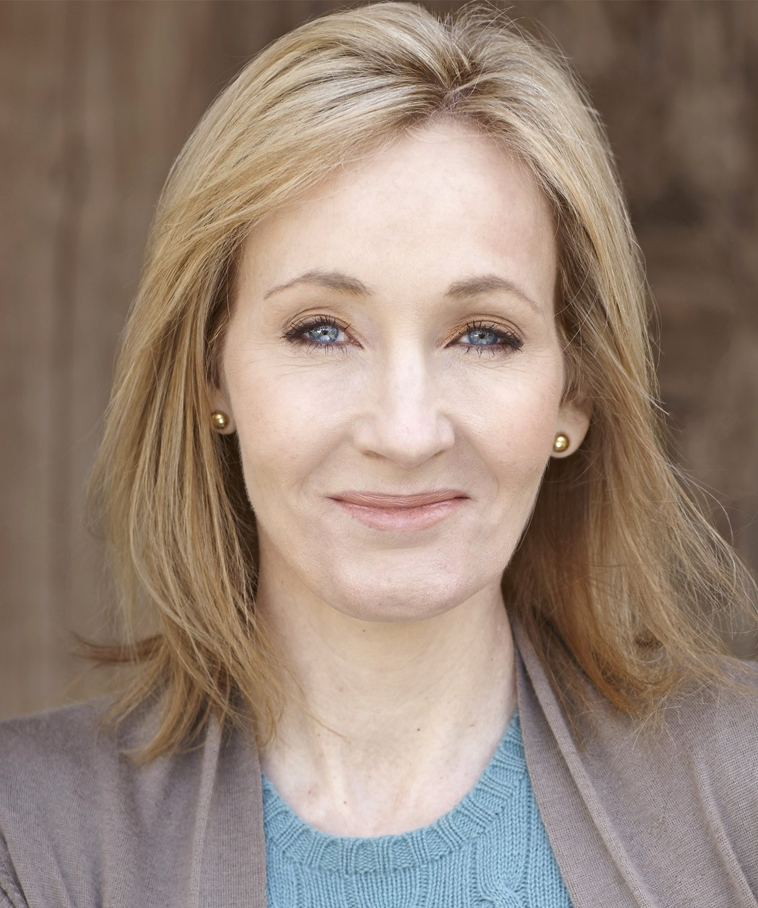

Joanne Rowling

Who Is J.K. Rowling?
Joanne Rowling (born July 31, 1965), who goes by the pen name J.K. Rowling, is a British author and screenwriter best known for her seven-book Harry Potter children's book series. J.K. Rowling was living in Edinburgh, Scotland, and struggling to get by as a single mom before her first book, Harry Potter and the Sorcerer's Stone, was published. The children's fantasy novel became an international hit and Rowling became an international literary sensation in 1999 when the first three installments of Harry Potter took over the top three slots of The New York Times best-seller list after achieving similar success in her native United Kingdom. The series has sold more than 450 million copies and was adapted into a blockbuster film franchise. Rowling published the novel The Casual Vacancy in 2012, followed by the crime novel Cuckoo Calling under the pen name Robert Galbraith in 2013. In 2016, she released a play, Harry Potter and the Cursed Child, and a movie, Fantastic Beasts and Where to Find Them.
J.K. Rowling’s Net Worth
According to The Sunday Times 2017 Rich List, J.K. Rowling’s net worth is £650 million (about $850 million) — making her wealthier than even Queen Elizabeth II. Forbes put her wealth at $650 million in 2017, in large part due to the 450 million copies of Harry Potter sold to-date and the subsequent movie franchise that has grossed $7.7 billion. (Her worth would've been more in Forbes if it were not for the $150 million she has donated to various charities.) In the first half of 2017, Rowling took home an estimated $95 million thanks to her new play, Harry Potter and the Cursed Child, and movie, Fantastic Beasts and Where to Find Them.
Husband and Children
On December 26, 2001, J.K. Rowling married anesthetist Dr. Neil Murray at the couple's home in Scotland. They have two children together, David (born in 2003) and Mackenzie (born in 2005). Rowling has one child, Jessica (born 1993), from her previous marriage.
When and Where Was J.K. Rowling Born?
J.K. Rowling was born on July 31, 1965, in Yate, England. She adopted her pen name, J.K., incorporating her grandmother's name, Kathleen, for the latter initial (Rowling does not have a middle name).
Early Life
A graduate of Exeter University, Rowling moved to Portugal in 1990 to teach English. There, she met and married the Portuguese journalist Jorge Arantes. The couple's daughter, Jessica, was born in 1993. After her marriage ended in divorce, Rowling moved to Edinburgh with her daughter to live near her younger sister, Di.
While struggling to support her daughter Jessica and herself on welfare, Rowling worked on her first book in the Harry Potter series. The idea for the book reportedly occurred to her while she was traveling on a train from Manchester to London in 1990.
'Harry Potter' Movies
A film version of Rowling’s first book, Harry Potter and the Sorcerer's Stone, was released in November 2001 and was directed by Chris Columbus and starred Daniel Radcliffe, Emma Watson and Rupert Grint. In its opening weekend in the U.S., the film debuted on a record 8,200 screens and smashed the previous box-office record, earning an estimated $93.5 million ($20 million more than the previous record holder, 1999's The Lost World: Jurassic Park). It ended the year as the top-grossing movie of 2001.
The second and third films in the series — Harry Potter and the Chamber of Secrets (2002), directed by Columbus, and Harry Potter and the Prisoner of Azkaban (2004), directed by Alfonso Cuarón — each enjoyed similar record-breaking box-office success. Harry Potter and the Goblet of Fire, directed by Mike Newell, was released in 2005.
J.K. Rowling’s Website
In 2014, Rowling published a short story about grown-up Harry Potter and a Hogwarts school reunion on her website Pottermore. Since the site launched, she’s added more stories and information about all things Harry Potter.